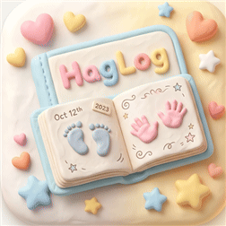
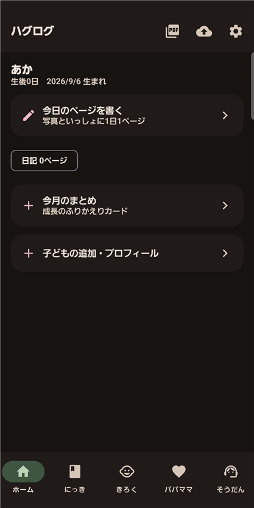
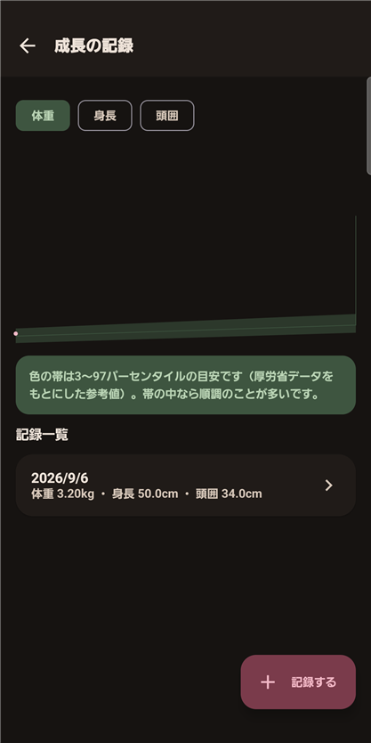
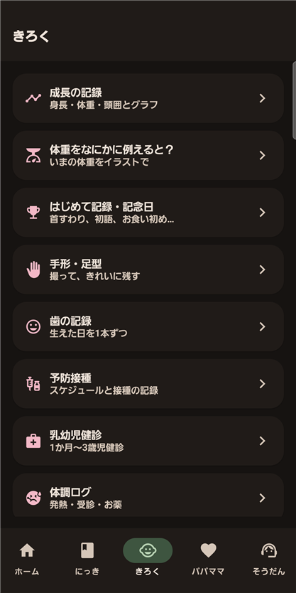

ハグログ｜写真日記・成長記録が残せるデジタル母子手帳アプリ
子どもの毎日は、あっという間に過ぎていきます。ハグログは、写真日記・成長記録・手形足型・母子手帳の記録までを1つにまとめ、あとから見返せる形で残せるデジタル母子手帳アプリです。
結論から言うと、毎日の写真と一言を残すだけで、成長の記録が自然に積み重なっていきます。

ハグログ
毎日の写真日記・成長の記録・手形足型・思い出のPDF。親の記録もできるデジタル母子手帳。
近日公開(Google Play で公開準備中)※ 現在公開準備中のため、公開までGoogle Playのページが表示されない場合があります。
どんな人におすすめですか？
次のような方に向いています。
- 子どもの毎日の写真と、その日のできごとを残しておきたい方
- 身長・体重・予防接種など、母子手帳の記録をデジタルでも管理したい方
- 手形・足型をきれいな状態で残しておきたい方
- 記録した内容をあとで1冊のアルバムのような形にまとめたい方
- 月ごとの成長を1枚のコラージュにして、家族や友人に送りたい方
- 育児中、自分自身の気分や体調も記録しておきたい方
主な機能
| 機能 | できること |
|---|---|
| 毎日1ページの写真日記 | その日の写真とできごと・気持ち・機嫌を、カレンダーとタイムラインで記録 |
| 思い出の1冊 PDF | 表紙・プロフィール・成長の記録・日記ページを1冊のPDFとして書き出し |
| 手形・足型スキャン | インクでとった手形・足型を撮影するだけで、背景をきれいにして保存 |
| 母子手帳の記録 | 身長・体重・頭囲のグラフ、予防接種・乳幼児健診のスケジュールと記録 |
| 月齢フォト（成長コラージュ） | 月誕生日ごとに1枚ずつ写真を残し、1年分を1枚のコラージュ画像にして、LINEなどで送ったり保存したりできる |
| 歯の記録 | 乳歯20本を、口を正面から見た図から選び、生えた日と写真を記録。生える時期の目安も表示 |
| 受診メモ | 今日・3日間・7日間の体温・お薬・授乳やミルク、おむつの回数・最近の予防接種・アレルギーを1画面にまとめ、先生に聞きたいことも書き込める。記録をまとめて見せるための画面で、診断をする機能ではありません |
| 困った時のたより | 発熱・誤飲など育児Q&A(受診の目安つき)と相談先をまとめて表示 |
| パパ・ママの記録 | 気分・睡眠・体調など、親御さん自身のセルフケア記録も |



使い方の流れ
アプリを開き、その日の写真を選んで一言添えるだけで日記が1ページ完成します。成長記録や手形・足型、母子手帳の記録は、それぞれ専用の画面からいつでも追加できます。記録がたまったら、思い出の1冊としてPDFに書き出せます。
よくある質問
Q. 無料で使えますか？
A. はい。Google Playから無料でダウンロードして使えます。画面下のバナー広告と、日記を保存したあとに表示されることがある全画面広告があります。買い切りの「広告を削除する」(日本での価格は480円。実際の価格はGoogle Playの表示に従います)で、どちらも表示されなくなります。
Q. 母子手帳の代わりに使えますか？
A. 身長・体重・頭囲のグラフや、予防接種・乳幼児健診のスケジュールと記録を残せます。紙の母子手帳と併用しながら、日々の記録をデジタルで補うアプリです。
Q. 記録した写真やデータはどこに保存されますか？
A. 日記・写真・成長記録などの記録は端末に保存され、開発者のサーバーには送られません。端末のバックアップを有効にしている場合は、Android の自動バックアップ(Google ドライブ)や機種変更のときの移行に含まれることがあります。アカウント登録も不要です。
Q. 記録を1冊のアルバムのような形で残せますか？
A. 残せます。表紙・プロフィール・成長の記録・日記ページを1冊のPDFとして書き出せます。
Q. 手形・足型も記録できますか？
A. できます。インクでとった手形・足型を撮影するだけで、背景をきれいにして保存できます。
Q. 月齢フォト（成長コラージュ）とは何ですか？
A. 月誕生日ごとに1枚ずつ写真を残す機能です。1枚からでも、並べた写真を1枚のコラージュ画像にして、LINEなどで送ったり保存したりできます。
Q. 歯の記録はどんな形で残せますか？
A. 乳歯20本を、口を正面から見た図で表示します。歯をタップして、生えた日と写真を記録できます。生えた歯は白く、写真つきの歯はカメラのマークで分かります。写真は端末内に保存され、バックアップにも含まれます。
Q. 受診メモとは何ですか？
A. 診察のときに先生に見せるための画面です。今日・3日間・7日間の体温・お薬・授乳やミルク、おむつの回数・最近の予防接種・アレルギーを、これまでの記録から1画面にまとめます。記録を見やすく並べるだけで、診断をする機能ではありません。
子どもの「今」を残したいご家族へ
毎日の小さな記録が、あとから見返せる大きな思い出になります。ハグログで今日から始められます。
近日公開(Google Play で公開準備中)※ 現在公開準備中のため、公開までGoogle Playのページが表示されない場合があります。